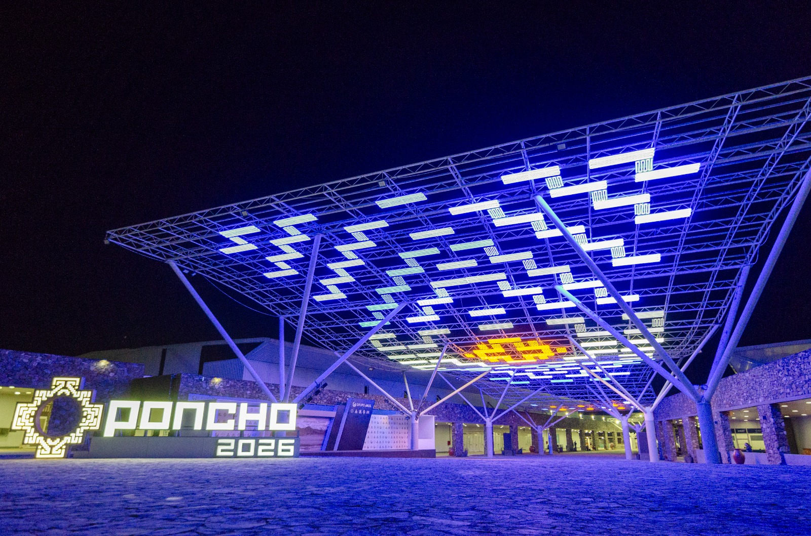

Pabellones de Artesanías
El corazón de la feria. Un espacio único para admirar y adquirir obras maestras textiles, cerámicas, de platería y madera talladas por las manos de destacados artesanos nacionales e internacionales.
Portal Oficial de la Fiesta Nacional e Internacional del Poncho
Edición 2026

"Las manos expresan emociones a través de su lenguaje no verbal, reflejando estados internos del alma mediante sentimientos y actitudes que luego serán canalizados en trabajos, en obras. Manos que tejen, manos que moldean la arcilla y ejecutan instrumentos... Esas son nuestras herramientas; las mismas que nos convierten en seres creadivos y mágicos."
Este año, del 17 al 26 de julio de 2026, el Predio Ferial Catamarca volverá a vestirse de fiesta para afirmar la identidad, el diseño, la gastronomía y las expresiones artísticas del folklore y la danza.
Poncho Digital es la plataforma oficial diseñada para conectar de manera dinámica a artesanos, productores regionales y visitantes de todo el mundo.
Conocé las principales propuestas y espacios que componen nuestra tradicional celebración
El corazón de la feria. Un espacio único para admirar y adquirir obras maestras textiles, cerámicas, de platería y madera talladas por las manos de destacados artesanos nacionales e internacionales.